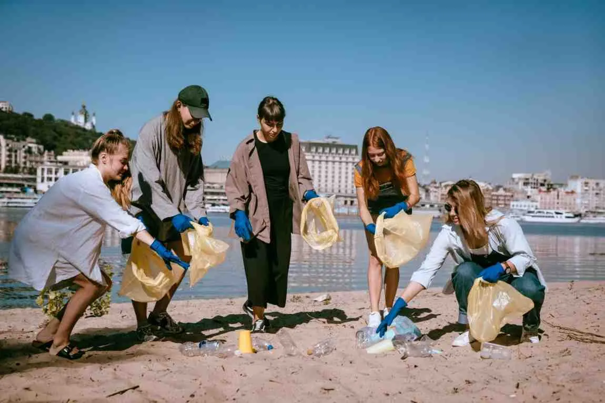
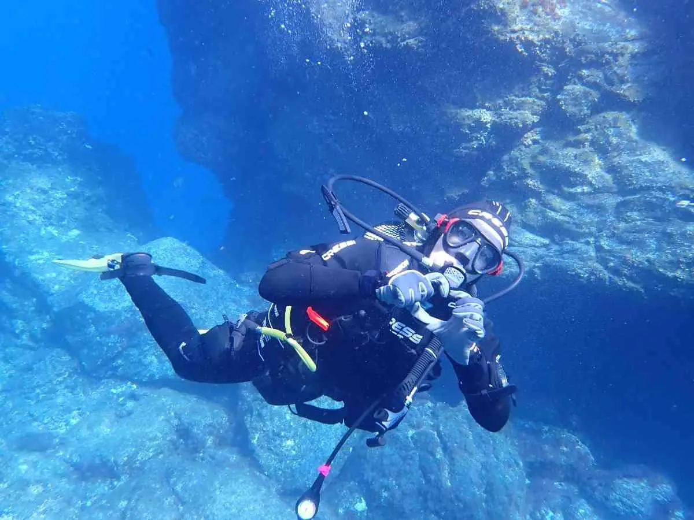
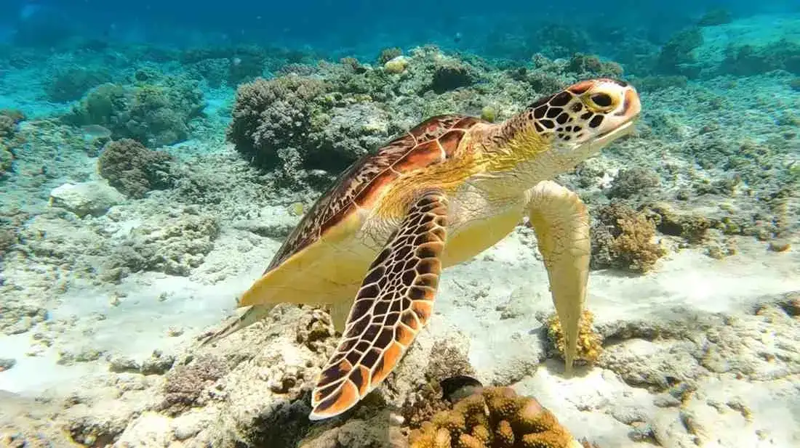
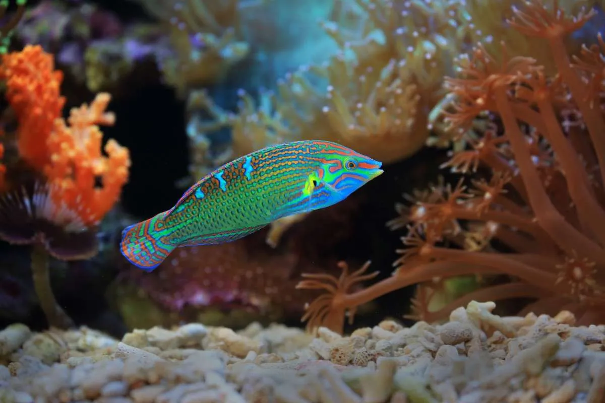

Stackly implements algorithmic staging systems to predict and intercept micro-plastics and synthetic pollutants before structural integration into benthic channels takes place.

Our operational framework matches immediate coastal community volunteer needs with global deep-sea ecosystem data tracking.
Mobilizing macro-scale shoreline debris retrieval missions tracking upstream plastic origin signatures.
Propagating climate-resilient micro-fragment strains within localized thermal offshore nurseries.
Continuous marine biochemical parsing arrays logging dynamic acidification shifts.
Deploying structured global ocean literacy training programs into high-impact maritime schooling systems.
Accelerating calcification metrics inside micro-nursery arrays to fast-track ecosystem structural normalization layers.
Dividing valid biological stock lines down to millimeter scales to fast-track baseline generation growth speed metrics by 10x.
Deploying structural substrate grids integrated with active bio-telemetry performance nodes tracking pH indices.
Sustaining permanent ocean health metrics requires embedding tracking frameworks cleanly inside regional educational networks.
Deploying active science kits directly into public school systems along high-risk coastal vectors to familiarize young leaders with marine taxonomy structures.
Examine Academic Modules
Providing specialized training pathways spanning deep telemetry deployment, ocean policy formulation basics, and open-source validation data management.
Access Portal DatabaseInstead of single linear tracks, our labs utilize a synchronous matrix system, delivering telemetry instantly from the sea down to international policymakers.
Deploying spectrum-buoy telemetry systems across open harbors to sample pH indices, salinity coefficients, and trace heavy metal configurations instantly.
Mapping complex underwater reef structures using autonomous side-scan sonar drones to produce complete high-definition 3D terrain matrices.
Parsing trace environmental DNA samples directly out of deep marine currents to track the movement, health, and population changes of protected species.
Converting compiled environmental analytics datasets directly into actionable compliance reports for international maritime commissions.
Securing vital indicator species lines through coordinated telemetry grids and commercial acoustic boundary mitigation protocols.

Protecting delicate nesting perimeter tracks and executing tracking arrays across global shipping lane boundaries.
View Telemetry Stream
Deploying hydro-acoustic listening grids across calving sectors to shield migrations from high-frequency commercial sonar arrays.
Access Acoustic FilesSelect your vector of operational acceleration. Every logged field contribution stabilizes active marine tracking sectors.
Enlist directly into shoreline cleaning arrays, micro-plastic recovery programs, or field verification logistics grids.
Directly fund critical laboratory analytics equipment arrays, autonomous nursery vessels, and tracking network setups.
Integrate your commercial enterprise metrics directly with verified ocean restoration carbon-offset loops.